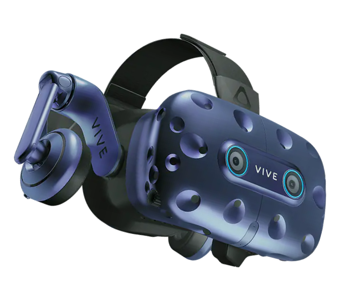

Лаборатория RTUITLab появилась в 2016 году в стенах Института Информационных Технологий РТУ МИРЭА. Тогда это была группа энтузиастов, которые пробовали свои силы в освоении новых технологий, ездили на первые выставки и хакатоны.

Проекты
Чем мы занимаемся? Мы создаем программные продукты, которые используются в различных сферах деятельности и выводят образовательный процесс на новый уровень. Команды Reality из RTUITLab многократные победители хакатонов и конференций. Многие сотрудники являются преподавателями образовательных программ, которые Институт ИТ проводит в сотрудничестве с компаниями Яндекс, Samsung и другими, а также преподают на внутренних кафедрах Института. data.map((e: ProjectsData, i: number) => return ( ); )